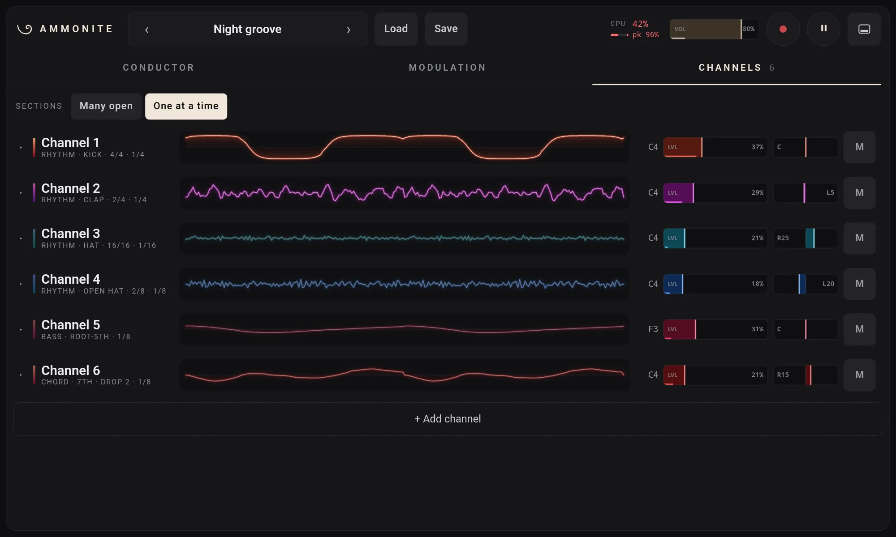
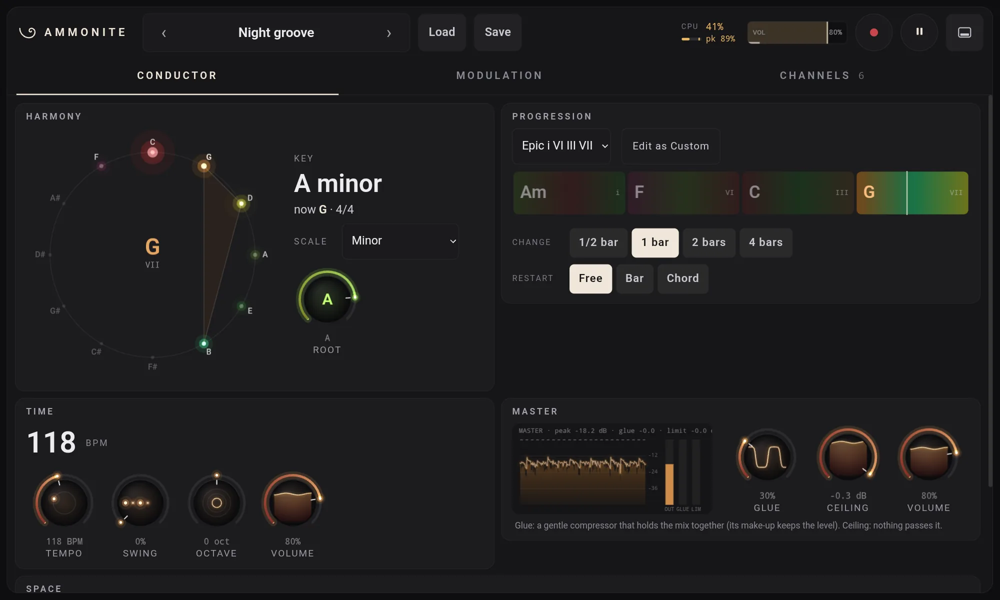
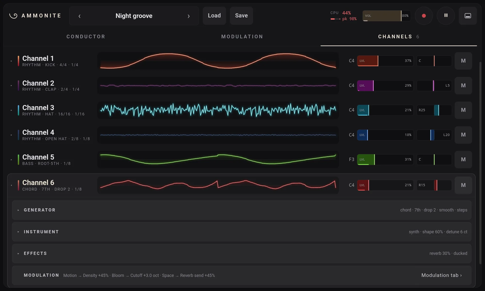
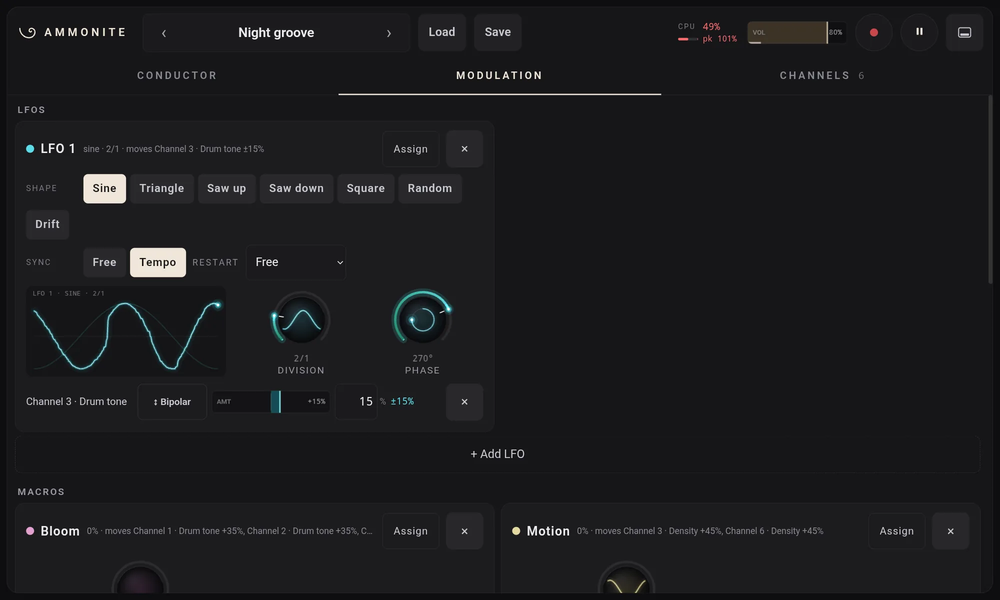

AMMONITE MINI
Ammonite Desktop's synthesizer on an Android tablet

Ammonite Mini 0.1.0
Free and open source (MIT). Android 13 or later, for tablets. Installed by hand, not from the Play Store: see how.
What it is
Ammonite Mini is Ammonite Desktop made lean for a tablet: a native Android app with the whole instrument and no 3D stage. You pick a key and a chord progression; up to 16 channels of arps, chords, bass and drums choose their notes from the chords, each in its own rhythm, so everything stays in key.
- The same engine as Desktop, unchanged: the channels, the Conductor, the modulation (32 LFOs, 16 macros, 128 routes) and the effects.
- The same patches. A patch saved on Desktop opens on Mini and back again; Desktop's stage settings ride along inside it, untouched.
- The same panel, made for fingers. Every control is big enough to touch; double-tap to reset one, hold a second finger down for fine moves, long-press for menus. Your pinned controls sit in a drawer along the bottom.
- What it leaves out: the 3D stage, syncing to other gear (it runs on its own clock), and the plugin formats. It plays through the tablet's own audio output.
On the tablet
Screenshots from a Galaxy Tab S6 Lite, playing the Night groove preset.



Requirements
- Android
- 13 or later
- Processor
- 64-bit ARM (arm64-v8a), as nearly every recent tablet
- Screen
- A tablet in landscape; a phone is too small for the panel
- Tested on
- Samsung Galaxy Tab S6 Lite (2024), SM-P620, Android 16. Other tablets should work but have not been tried.
Install it
Ammonite Mini is not on the Play Store, so Android asks you once to allow the install.
- On the tablet, open the release
page and download
Ammonite-Mini-0.1.0.apk. - Open the downloaded file, from the browser's downloads or the My Files app.
- Android says it can't install apps from this source: tap Settings, switch on Allow from this source, go back and tap Install.
- If Play Protect warns about an unknown app, tap More details, then Install anyway.
- Open Ammonite Mini. It starts playing straight away.
On a Samsung tablet the switch is also under Settings › Security and privacy › More security settings › Install unknown apps. Later versions install over this one the same way, keeping your settings.